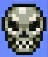
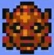
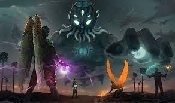

slimeking
e considerado o boss mais fraco do jogo sendo geralmente o primeiro a ser derrotado pelos players.

Olho de Cthulhu
representa uma das partes caidas de cthulhu, sua dificuldade e razoavel,variando do modo em que esta jogando.

Devorador de mundos
é o boss da corrupçao caso tenha ela no seu mundos, como o proprio nome ja diz ele e um ser devorador de mundos, sua dificuldade começa a crescer mas nada que uma arena bem feita não resolva.

Cerebro de cthulhu
é o boss do carmin. Um pedaço do cerebro de cthulhu que caiu na terra, ele e consideravelmente um boss de certa dificuldade para quem esta começando mas pessoas com mais experiencia acabam passando sem muitos problemas

queenbee
é o boss da jungle e particulamente esse boss e extremamente dificil com uma movimentaçao muito rapido com ataques que dao muito dano e te deixam envenenado incrivelmente forte.

Skeletron
esse e definitivamente um dos bosses mais dificeis do jogo para quem ta começando pois ele te ataca de diferentes direçoes causa muito dano e muito rapido e tem muita vida, sem contar o fato de que dependendo a dificuldade que o player colocou para jogar ele possui um ataque capas de te dar hitkill(morte instantanea).

Wall of flesh
o ultimo boss do pré-HardMode sendo literalmente uma parede de carne gigante que atira raio-laser, ele e considerado incrivelmente dificil pois ele da muito dano e principalmente por ser o unico boss do jogo que precisa de uma arena obrigatoria para derrotar ele.

Mecanicos
sao as versoes mecanicas dos bosses olho, devorador e Skeletron sendo o skeletro o mais dificil tendo ataques a distancia perto e um ataque capas de dar morte instantanea independente do modo que você estiver jogando.

Golem
ele e um boss encontra em um entrutura chamada templo na selva que você desbloqueia após matar a plantera e necessario derrotalo para desbloquear o cultista lunatico, ele e basicamente um golem de pedra gigante extremamente dificil.

Cultista lunatico
e o ultimo boss antes do moonlord sendo extremamente dificil ate mesmo teleportando e dando muito dano.

Moonlord
é o ultimo boss do jogo sendo considerado por muitos o boss mais dificil do jogo uma batalha extremamente demorado e fazendo você presta atençao em cada segundo da partida sem nem mesmo poder respirar com ataques que te agarram,com lasers , olhos na maos e etc... realmente o ultimo boss de um jogo tao dificil.